You are viewing July 05 to July 09!
🏆 EURO 2024
| Date | Fixture  Bold-faced team is selected by AIGoalie to win. Bold-faced team is selected by AIGoalie to win. |
Odds Pre-match odds of the selected team winning. Note that odds are fetched once per day at 00:00 GMT, meaning some matches may have live odds. Also odds may not be available for all leagues. |
Win How confident AIGoalie is that the selected team will win. Low confidence indicates unpredictability of the match. ▼ |
Result Whether the selected team won, drew, or lost. |
Over The minimum number of goals predicted by AIGoalie. ⚽ = over 0.5 ⚽⚽ = over 1.5 ⚽⚽⚽ = over 2.5 ... ► |
Alerts Home 🏥 = Considerable injuries 🏥🏥 = Major injuries 📉 = Dip in form Note, you may see injuries when expanding match but no alert here, meaning the model does not consider them important. |
Alerts Away 🏥 = Considerable injuries 🏥🏥 = Major injuries 📉 = Dip in form Note, you may see injuries when expanding match but no alert here, meaning the model does not consider them important. |
|
|---|---|---|---|---|---|---|---|---|
| Sat. 06 Jul. | England  6:4 after pens  Switzerland Form: DDWW Form: DDWL |
1.51 vs -1.51 | 2.28 | 75% | ✓ | ⚽ 1.35 |
📉 Away team has a dip in form recently | |
| Sat. 06 Jul. | Netherlands  2:1  Türkiye Form: DLWW Form: LWWL |
0.84 vs -1.03 | 1.62 | 63% | ✓ | ⚽⚽ 2.12 |
📉 Home team has a dip in form recently | 🏥 📉 Away team has considerable injuries and a dip in form recently |
| Fri. 05 Jul. | Spain  2:1 AET  Germany Form: WWWW Form: WDWL |
0.32 vs -0.45 | 2.84 | 35% | ✓ | ⚽⚽ 2.18 |
📉 Away team has a dip in form recently | |
| Tue. 09 Jul. | Spain 20:00  France Form: WWWW Form: DDWW |
-0.29 vs 0.15 | 3.3 | 22% | ⚽ 1.88 |
|||
| Fri. 05 Jul. | Portugal  3:5 after pens France Form: WLWL Form: DDWW |
-0.14 vs 0.14 | 2.54 | 21% | ✓ | ⚽⚽ 2.51 |
📉 Home team has a dip in form recently |
🏆 Copa América 2024
| Date | Fixture Bold-faced team is selected by AIGoalie to win. |
Odds Pre-match odds of the selected team winning. Note that odds are fetched once per day at 00:00 GMT, meaning some matches may have live odds. Also odds may not be available for all leagues. |
Win How confident AIGoalie is that the selected team will win. Low confidence indicates unpredictability of the match. ▼ |
Result Whether the selected team won, drew, or lost. |
Over The minimum number of goals predicted by AIGoalie. ⚽ = over 0.5 ⚽⚽ = over 1.5 ⚽⚽⚽ = over 2.5 ... ► |
Alerts Home 🏥 = Considerable injuries 🏥🏥 = Major injuries 📉 = Dip in form Note, you may see injuries when expanding match but no alert here, meaning the model does not consider them important. |
Alerts Away 🏥 = Considerable injuries 🏥🏥 = Major injuries 📉 = Dip in form Note, you may see injuries when expanding match but no alert here, meaning the model does not consider them important. |
|
|---|---|---|---|---|---|---|---|---|
| Fri. 05 Jul. | Argentina  5:3 after pens  Ecuador Form: WWWW Form: LWDL |
0.91 vs -1.89 | 1.73 | 66% | ✓ | 😴 0.78 |
📉 Away team has a dip in form recently | |
| Sat. 06 Jul. | Colombia  5:0  Panama Form: WWWD Form: LLWW |
0.23 vs -0.61 | 1.34 | 28% | ✓ | ⚽ 1.24 |
📉 Away team has a dip in form recently | |
| Sun. 07 Jul. | Uruguay  4:2 after pens  Brazil Form: WWWW Form: WDDW |
-0.83 vs 0.16 | 3.5 | 23% | ❌ | ⚽ 1.34 |
📉 Away team has a dip in form recently | |
| Sat. 06 Jul. | Venezuela  4:5 after pens  Canada Form: DWLL Form: LWDW |
-0.32 vs -0.56 | 4% | ❌ | 😴 0.95 |
🏥 📉 Home team has considerable injuries and a dip in form recently |
🌍 Global
| Date | Fixture Bold-faced team is selected by AIGoalie to win. |
Odds Pre-match odds of the selected team winning. Note that odds are fetched once per day at 00:00 GMT, meaning some matches may have live odds. |
Win How confident AIGoalie is that the selected team will win. Low confidence indicates unpredictability of the match. ▼ |
Result Whether the selected team won, drew, or lost. |
Over The minimum number of goals predicted by AIGoalie. ⚽ = over 0.5 ⚽⚽ = over 1.5 ⚽⚽⚽ = over 2.5 ... ► |
Alerts Home 🏥 = Considerable injuries 🏥🏥 = Major injuries 📉 = Dip in form Note, you may see injuries when expanding match but no alert here, meaning the model does not consider them important. |
Alerts Away 🏥 = Considerable injuries 🏥🏥 = Major injuries 📉 = Dip in form Note, you may see injuries when expanding match but no alert here, meaning the model does not consider them important. |
|
|---|---|---|---|---|---|---|---|---|
| Sun. 07 Jul. | Lion City Sailors 11:00 Tanjong Pagar United Form: WWWD Form: LDLL |
1.85 vs -2.88 | 1.07 | 79% | ⚽⚽⚽ 3.39 |
📉 Away team has a dip in form recently | ||
| Fri. 05 Jul. | FC RFS  7:0  FS Jelgava Form: WWWW Form: LDWL |
1.79 vs -2.53 | 1.04 | 78% | ✓ | ⚽⚽⚽ 3.14 |
📉 Away team has a dip in form recently | |
| Sun. 07 Jul. | Malmö FF 5:1  Halmstads BK Form: WDWW Form: LWLL |
1.78 vs -2.46 | 1.19 | 78% | ✓ | ⚽⚽ 2.53 |
📉 Away team has a dip in form recently | |
| Sat. 06 Jul. | Cibao FC  Unknown  Atlético Vega Real Form: DWWD Form: LDDW |
1.61 vs -2.36 | 76% | 😴 0.96 |
📉 Away team has a dip in form recently | |||
| Sat. 06 Jul. | England 6:4 after pens Switzerland Form: DDWW Form: DDWL |
1.51 vs -1.51 | 2.28 | 75% | ✓ | ⚽ 1.35 |
📉 Away team has a dip in form recently | |
| Sun. 07 Jul. | Kaya FC-Iloilo 1:0  Davao Aguilas FC Form: WWWL Form: LWDL |
1.45 vs -1.95 | 74% | ✓ | ⚽⚽ 2.3 |
📉 Home team has a dip in form recently | 📉 Away team has a dip in form recently | |
| Sat. 06 Jul. | CA Peñarol  1:1  Club Deportivo Maldonado Form: WWLD Form: LDLD |
1.35 vs -2.3 | 74% | ⁃ | ⚽ 1.51 |
🏥 📉 Home team has considerable injuries and a dip in form recently | 📉 Away team has a dip in form recently | |
| Sat. 06 Jul. | Valur Reykjavík  4:0  Fylkir Reykjavík Form: LLDW Form: WWWL |
1.33 vs -1.97 | 73% | ✓ | ⚽⚽⚽⚽ 4.05 |
📉 Home team has a dip in form recently | 📉 Away team has a dip in form recently | |
| Tue. 09 Jul. | Gimcheon Sangmu  11:30 Suwon FC Form: WWWD Form: LWWD |
1.2 vs -2.04 | 72% | ⚽⚽ 2.24 |
||||
| Fri. 05 Jul. | Navbahor Namangan  1:0  FC Buxoro Form: DDLL Form: DLWW |
1.18 vs -1.87 | 72% | ✓ | ⚽ 1.16 |
📉 Home team has a dip in form recently | 📉 Away team has a dip in form recently | |
| Sun. 07 Jul. | Club Nacional  19:30  Rampla Juniors FC Form: LWLW Form: WLDL |
1.17 vs -1.95 | 1.26 | 72% | ⚽⚽ 2.74 |
📉 Home team has a dip in form recently | 📉 Away team has a dip in form recently | |
| Sat. 06 Jul. | Yunnan Yukun  2:0  Foshan Nanshi Form: WWLW Form: DWLW |
1.13 vs -1.83 | 1.13 | 71% | ✓ | ⚽ 1.96 |
📉 Home team has a dip in form recently | 📉 Away team has a dip in form recently |
| Sun. 07 Jul. | FK Bodø/Glimt  5:1  SK Brann Form: LDDW Form: DLWW |
1.02 vs -1.67 | 2.08 | 70% | ✓ | ⚽⚽ 2.89 |
📉 Home team has a dip in form recently | 📉 Away team has a dip in form recently |
| Tue. 09 Jul. | AC Virtus Acquaviva 20:00  FCSB Form: WWWW Form: LLLW |
-1.6 vs 1.0 | 70% | 😴 0.87 |
📉 Away team has a dip in form recently | |||
| Sun. 07 Jul. | Sociedade Esportiva Palmeiras 22:30 Esporte Clube Bahia Form: WWLW Form: LWWL |
0.95 vs -1.98 | 68% | ⚽⚽ 2.56 |
🏥🏥 📉 Home team has MAJOR injuries and a dip in form recently | 📉 Away team has a dip in form recently | ||
| Sun. 07 Jul. | FK Liepaja  0:1  Riga FC Form: DDLL Form: WDWW |
-1.35 vs 0.94 | 68% | ✓ | ⚽⚽ 2.21 |
📉 Home team has a dip in form recently | ||
| Sun. 07 Jul. | Deportes Santa Cruz  22:30  CSD Colo-Colo Form: DLWD Form: DLWD |
-1.73 vs 0.93 | 1.09 | 67% | ⚽ 1.38 |
📉 Home team has a dip in form recently | 📉 Away team has a dip in form recently | |
| Fri. 05 Jul. | Argentina 5:3 after pens Ecuador Form: WWWW Form: LWDL |
0.91 vs -1.89 | 1.73 | 66% | ✓ | 😴 0.78 |
📉 Away team has a dip in form recently | |
| Sun. 07 Jul. | CR Flamengo  1:1  Cuiabá Esporte Clube (MT) Form: WLWW Form: DDDL |
0.9 vs -1.69 | 66% | ⁃ | ⚽ 1.66 |
🏥🏥 📉 Home team has MAJOR injuries and a dip in form recently | 📉 Away team has a dip in form recently | |
| Fri. 05 Jul. | Henan FC  0:1  Shanghai Port Form: WWWW Form: WWWW |
-1.22 vs 0.9 | 1.28 | 66% | ✓ | ⚽⚽⚽ 3.36 |
||
| Sat. 06 Jul. | Netherlands 2:1 Türkiye Form: DLWW Form: LWWL |
0.84 vs -1.03 | 1.62 | 63% | ✓ | ⚽⚽ 2.12 |
📉 Home team has a dip in form recently | 🏥 📉 Away team has considerable injuries and a dip in form recently |
| Fri. 05 Jul. | FA Siauliai  1:0  FK TransINVEST Form: DDWW Form: WLWL |
0.78 vs -1.66 | 1.93 | 61% | ✓ | ⚽⚽ 2.24 |
🏥 Home team has considerable injuries | 📉 Away team has a dip in form recently |
| Sun. 07 Jul. | Atlético de San Luis  2:1  CF América Form: LLLW Form: WDWW |
-1.37 vs 0.78 | 1.8 | 61% | ❌ | ⚽⚽ 2.33 |
📉 Home team has a dip in form recently | |
| Sat. 06 Jul. | Selangor FC 3:2 Kuching City Form: LWLW Form: DDLW |
0.76 vs -1.68 | 1.21 | 60% | ✓ | ⚽⚽ 2.54 |
📉 Home team has a dip in form recently | 📉 Away team has a dip in form recently |
| Sat. 06 Jul. | CA River Plate Montevideo  Unknown CA Peñarol Form: LDLD Form: WWLD |
-1.41 vs 0.76 | 60% | ⚽ 1.33 |
📉 Home team has a dip in form recently | 🏥 📉 Away team has considerable injuries and a dip in form recently | ||
| Sat. 06 Jul. | Urawa Red Diamonds  2:3  Shonan Bellmare Form: LDWW Form: DLDL |
0.75 vs -1.73 | 60% | ❌ | ⚽ 1.73 |
🏥 Home team has considerable injuries | 📉 Away team has a dip in form recently | |
| Sat. 06 Jul. | Montedio Yamagata  1:0  Tochigi SC Form: WLDW Form: LWWL |
0.74 vs -1.61 | 1.88 | 60% | ✓ | ⚽ 1.24 |
📉 Home team has a dip in form recently | 📉 Away team has a dip in form recently |
| Sat. 06 Jul. | ÍA Akranes  8:0  HK Kópavogs Form: WLLD Form: WLLW |
0.73 vs -1.51 | 1.58 | 59% | ✓ | ⚽⚽ 2.56 |
📉 Home team has a dip in form recently | 📉 Away team has a dip in form recently |
| Sun. 07 Jul. | Tigres UANL 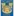 1:0  Club Necaxa Form: WLDL Form: LLWL |
0.71 vs -1.52 | 1.2 | 58% | ✓ | ⚽⚽ 2.39 |
📉 Home team has a dip in form recently | 📉 Away team has a dip in form recently |
| Sat. 06 Jul. | Jiangxi Lushan  0:1  Guangxi Pingguo Haliao Form: DLLD Form: DWWD |
-1.36 vs 0.69 | 1.46 | 58% | ✓ | ⚽⚽ 2.04 |
📉 Home team has a dip in form recently | |
| Sun. 07 Jul. | CD Cruz Azul  1:0  Mazatlán FC Form: WLDL Form: LWLD |
0.69 vs -1.52 | 1.38 | 58% | ✓ | ⚽ 1.9 |
📉 Home team has a dip in form recently | 📉 Away team has a dip in form recently |
| Sun. 07 Jul. | Zhejiang FC  4:0  Meizhou Hakka Form: LWWL Form: DLLL |
0.68 vs -1.61 | 1.41 | 57% | ✓ | ⚽⚽ 2.19 |
📉 Home team has a dip in form recently | 📉 Away team has a dip in form recently |
| Sat. 06 Jul. | Kashima Antlers  2:0  Hokkaido Consadole Sapporo Form: DDDL Form: LLLL |
0.67 vs -1.85 | 57% | ✓ | ⚽⚽ 2.54 |
📉 Home team has a dip in form recently | 🏥🏥 📉 Away team has MAJOR injuries and a dip in form recently | |
| Sat. 06 Jul. | Aral Nukus  0:1  Pakhtakor Tashkent Form: DWLD Form: DLWW |
-1.14 vs 0.66 | 57% | ✓ | ⚽⚽ 2.09 |
📉 Home team has a dip in form recently | 📉 Away team has a dip in form recently | |
| Fri. 05 Jul. | Skanstes SK  1:0  Valmiera FC II Form: LWWW Form: LWLL |
-1.36 vs 0.65 | 56% | ❌ | ⚽ 1.47 |
📉 Away team has a dip in form recently | ||
| Sat. 06 Jul. | Yokohama FC  1:0  Blaublitz Akita Form: WWWW Form: LLWL |
0.64 vs -1.24 | 1.73 | 56% | ✓ | ⚽ 1.04 |
📉 Away team has a dip in form recently | |
| Sun. 07 Jul. | Orlando City SC  5:0  D.C. United Form: DWLW Form: LLDL |
0.64 vs -1.73 | 1.75 | 56% | ✓ | ⚽⚽ 2.03 |
📉 Home team has a dip in form recently | 🏥 📉 Away team has considerable injuries and a dip in form recently |
| Fri. 05 Jul. | Kedah Darul Aman FC 0:0 Penang FC Form: WLLW Form: DDDW |
0.64 vs -1.54 | 1.04 | 55% | ⁃ | ⚽⚽ 2.03 |
📉 Home team has a dip in form recently | 📉 Away team has a dip in form recently |
| Sat. 06 Jul. | V-Varen Nagasaki  2:0  Roasso Kumamoto Form: DWWD Form: LLLW |
0.63 vs -1.32 | 1.67 | 55% | ✓ | ⚽⚽ 2.64 |
📉 Away team has a dip in form recently | |
| Sun. 07 Jul. | Jagiellonia Bialystok  postponed  Wisla Kraków Form: LWDW Form: DLLL |
0.63 vs -1.34 | 55% | ⚽⚽⚽ 3.32 |
📉 Away team has a dip in form recently | |||
| Sun. 07 Jul. | Rosenborg BK  2:0'  Odds BK Form: LLWD Form: LDWD |
0.62 vs -1.44 | 1.67 | 55% | ⚽⚽⚽ 3.17 |
📉 Home team has a dip in form recently | 📉 Away team has a dip in form recently | |
| Sat. 06 Jul. | SJK Seinäjoki II  1:2  JIPPO Joensuu Form: WLLL Form: LLDL |
0.6 vs -1.2 | 54% | ❌ | ⚽⚽ 2.23 |
📉 Home team has a dip in form recently | 📉 Away team has a dip in form recently | |
| Fri. 05 Jul. | KÍ Klaksvík 4:2 B36 Tórshavn Form: WLWW Form: DLWW |
0.58 vs -1.27 | 53% | ✓ | ⚽ 1.95 |
📉 Home team has a dip in form recently | 📉 Away team has a dip in form recently | |
| Sun. 07 Jul. | Rewa FA  1:1  Suva FA Form: WDWW Form: WLLL |
0.57 vs -1.35 | 53% | ⁃ | ⚽⚽⚽ 3.19 |
📉 Away team has a dip in form recently | ||
| Sat. 06 Jul. | Labasa FC  2:1 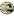 Nadroga FC Form: WWDW Form: LWLL |
0.57 vs -1.46 | 53% | ✓ | ⚽ 1.73 |
📉 Away team has a dip in form recently | ||
| Sun. 07 Jul. | Columbus Crew  4:0  Toronto FC Form: LWWW Form: LLLL |
0.57 vs -1.63 | 1.43 | 53% | ✓ | ⚽⚽ 2.42 |
🏥 📉 Away team has considerable injuries and a dip in form recently | |
| Sun. 07 Jul. | Molde FK  3:0  Lillestrøm SK Form: WLWD Form: WLLW |
0.57 vs -1.37 | 1.53 | 53% | ✓ | ⚽⚽⚽ 3.22 |
📉 Home team has a dip in form recently | 🏥 📉 Away team has considerable injuries and a dip in form recently |
| Sat. 06 Jul. | IF Elfsborg  3:0  IF Brommapojkarna Form: LWLL Form: LWDD |
0.54 vs -1.24 | 1.82 | 51% | ✓ | ⚽⚽ 2.57 |
📉 Home team has a dip in form recently | 📉 Away team has a dip in form recently |
| Fri. 05 Jul. | Torpedo-BelAZ Zhodino  3:0  Slavia Mozyr Form: WWLW Form: DWDL |
0.5 vs -1.21 | 50% | ✓ | 😴 0.82 |
📉 Home team has a dip in form recently | 📉 Away team has a dip in form recently | |
| Sun. 07 Jul. | Ayeyawady United 1:1 Yadanarbon FC Form: WWW Form: D |
0.5 vs -1.5 | 1.94 | 50% | ⁃ | ⚽ 1.32 |
📉 Away team has a dip in form recently | |
| Fri. 05 Jul. | Larne FC  19:45 Cliftonville FC Form: WWDW Form: LWDW |
0.5 vs -1.12 | 50% | ⚽ 1.78 |
||||
| Sun. 07 Jul. | Orange County SC  4:1 Memphis 901 FC Form: LLWL Form: LDDW |
0.5 vs -1.27 | 3.7 | 50% | ✓ | ⚽ 1.74 |
📉 Home team has a dip in form recently | 📉 Away team has a dip in form recently |
| Sun. 07 Jul. | Defensor Sporting Club  22:00 Montevideo Wanderers Form: WWWD Form: LWWL |
0.49 vs -1.19 | 49% | ⚽ 1.82 |
📉 Away team has a dip in form recently | |||
| Fri. 05 Jul. | Club Oriental  0:2  Montevideo City Torque Form: WDLD Form: DLWL |
-1.17 vs 0.49 | 49% | ✓ | ⚽⚽ 2.31 |
📉 Home team has a dip in form recently | 🏥 📉 Away team has considerable injuries and a dip in form recently | |
| Sun. 07 Jul. | FK Minsk  0:2  Neman Grodno Form: LDDL Form: WWWL |
-0.93 vs 0.48 | 48% | ✓ | ⚽ 1.07 |
📉 Home team has a dip in form recently | 📉 Away team has a dip in form recently | |
| Sun. 07 Jul. | San Antonio FC 2:1  Phoenix Rising FC Form: LDLL Form: WDDL |
-1.09 vs 0.45 | 3.4 | 46% | ❌ | ⚽ 1.37 |
📉 Home team has a dip in form recently | 📉 Away team has a dip in form recently |
| Sat. 06 Jul. | Danubio FC  Unknown Club Nacional Form: DDDW Form: LWLW |
-1.09 vs 0.44 | 2.32 | 45% | ⚽ 1.37 |
📉 Home team has a dip in form recently | 📉 Away team has a dip in form recently | |
| Sun. 07 Jul. | Club Almirante Brown  21:10  CA Colón Form: LWLL Form: WLDL |
-1.32 vs 0.44 | 1.97 | 45% | ⚽ 1.13 |
📉 Home team has a dip in form recently | 📉 Away team has a dip in form recently | |
| Sun. 07 Jul. | AIK 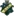 1:2  Kalmar FF Form: LLLW Form: LDWL |
0.44 vs -1.35 | 1.6 | 45% | ❌ | ⚽⚽ 2.61 |
📉 Home team has a dip in form recently | 🏥 📉 Away team has considerable injuries and a dip in form recently |
| Sun. 07 Jul. | Beijing Guoan  1:2  Wuhan Three Towns Form: WLWW Form: LWLL |
0.44 vs -1.14 | 1.74 | 45% | ❌ | ⚽⚽ 2.59 |
📉 Home team has a dip in form recently | 📉 Away team has a dip in form recently |
| Sat. 06 Jul. | Ilves Tampere 3:0  HJK Helsinki Form: WLDD Form: WWLW |
-1.05 vs 0.44 | 2.94 | 45% | ❌ | ⚽⚽ 2.17 |
📉 Home team has a dip in form recently | 📉 Away team has a dip in form recently |
| Sun. 07 Jul. | Coritiba Foot Ball Club  1:1  Paysandu SC Form: WDWL Form: LWDW |
0.43 vs -1.19 | 1.9 | 44% | ⁃ | ⚽ 1.97 |
🏥 📉 Home team has considerable injuries and a dip in form recently | |
| Sat. 06 Jul. | Vaasan Palloseura  2:3  Ekenäs IF Form: WDLL Form: LWWL |
0.42 vs -0.84 | 44% | ❌ | ⚽⚽ 2.45 |
📉 Home team has a dip in form recently | 📉 Away team has a dip in form recently | |
| Sat. 06 Jul. | Pallokerho-35  1:2 Mikkelin Palloilijat Form: WDLL Form: LLDL |
0.42 vs -1.12 | 43% | ❌ | ⚽⚽ 2.1 |
📉 Home team has a dip in form recently | 📉 Away team has a dip in form recently | |
| Sun. 07 Jul. | Atlético Ottawa  0:1'  Pacific FC Form: DWLD Form: DDWL |
0.41 vs -1.16 | 1.34 | 43% | ⚽ 1.14 |
📉 Home team has a dip in form recently | 📉 Away team has a dip in form recently | |
| Mon. 08 Jul. | Los Angeles Galaxy  03:30  Minnesota United FC Form: WWWW Form: LLLL |
0.4 vs -1.02 | 42% | ⚽⚽⚽ 3.18 |
📉 Away team has a dip in form recently | |||
| Fri. 05 Jul. | CA Rentistas  1:1  La Luz FC Form: DDWL Form: LWWL |
0.4 vs -1.06 | 2.36 | 42% | ⁃ | ⚽ 1.2 |
📉 Home team has a dip in form recently | 📉 Away team has a dip in form recently |
| Sun. 07 Jul. | Kuopion Palloseura  3:1  IF Gnistan Form: WLWL Form: WLLD |
0.39 vs -1.06 | 1.47 | 41% | ✓ | ⚽⚽ 2.58 |
📉 Home team has a dip in form recently | 📉 Away team has a dip in form recently |
| Sun. 07 Jul. | CA Defensores de Belgrano  0:0'  CD Morón Form: LLWL Form: WLLD |
0.39 vs -1.15 | 1.94 | 41% | ⚽ 1.58 |
📉 Home team has a dip in form recently | 📉 Away team has a dip in form recently | |
| Fri. 05 Jul. | Sport Club Corinthians Paulista  3:2  Esporte Clube Vitória Form: LDDL Form: WLWL |
0.38 vs -1.37 | 40% | ✓ | ⚽ 1.62 |
🏥 📉 Home team has considerable injuries and a dip in form recently | 📉 Away team has a dip in form recently | |
| Mon. 08 Jul. | CF Pachuca  02:00  CF Monterrey Form: WDDW Form: WDLW |
-0.8 vs 0.38 | 3.05 | 40% | ⚽ 1.79 |
📉 Home team has a dip in form recently | 📉 Away team has a dip in form recently | |
| Fri. 05 Jul. | KÍ Klaksvík II 0:0 FC Hoyvík Form: DWLW Form: LLLW |
0.37 vs -1.1 | 40% | ⁃ | ⚽⚽ 2.91 |
📉 Home team has a dip in form recently | 📉 Away team has a dip in form recently | |
| Mon. 08 Jul. | FC Anyang  11:30  Cheonan City Form: WLWD Form: LDWL |
0.36 vs -1.1 | 1.66 | 39% | ⚽ 1.82 |
📉 Home team has a dip in form recently | 📉 Away team has a dip in form recently | |
| Sun. 07 Jul. | Maharlika Taguig FC 0:1 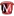 Mendiola FC 1991 Form: LDLW Form: LLWL |
0.36 vs -1.24 | 38% | ❌ | ⚽⚽⚽⚽ 4.11 |
📉 Home team has a dip in form recently | 📉 Away team has a dip in form recently | |
| Sat. 06 Jul. | Rampla Juniors FC Unknown  Liverpool FC Montevideo Form: WLDL Form: LLLL |
-0.88 vs 0.35 | 2.36 | 38% | ⚽⚽ 2.22 |
📉 Home team has a dip in form recently | 📉 Away team has a dip in form recently | |
| Sat. 06 Jul. | FK RFS II  4:0  Rezeknes FA Form: WWWW Form: LLLD |
0.35 vs -1.28 | 38% | ✓ | ⚽⚽⚽ 3.73 |
📉 Away team has a dip in form recently | ||
| Sun. 07 Jul. | FK Suduva Marijampole  0:0  DFK Dainava Alytus Form: LDLL Form: DDLW |
0.32 vs -1.09 | 2.48 | 36% | ⁃ | ⚽ 1.09 |
📉 Home team has a dip in form recently | 📉 Away team has a dip in form recently |
| Sat. 06 Jul. | Goiás EC  1:2  Associação Chapecoense de Futebol Form: DLLW Form: WLLL |
0.32 vs -1.07 | 35% | ❌ | 😴 0.96 |
📉 Home team has a dip in form recently | 📉 Away team has a dip in form recently | |
| Fri. 05 Jul. | Spain 2:1 AET Germany Form: WWWW Form: WDWL |
0.32 vs -0.45 | 2.84 | 35% | ✓ | ⚽⚽ 2.18 |
📉 Away team has a dip in form recently | |
| Fri. 05 Jul. | Penang FC 14:00 Kedah Darul Aman FC Form: DDDW Form: WLLW |
-0.64 vs 0.3 | 1.04 | 34% | ⚽⚽ 2.03 |
📉 Home team has a dip in form recently | 📉 Away team has a dip in form recently | |
| Sat. 06 Jul. | América Futebol Clube (MG)  2:0  Operário Ferroviário Esporte Clube (PR) Form: LDLW Form: WLDL |
0.3 vs -0.97 | 34% | ✓ | ⚽ 1.27 |
📉 Home team has a dip in form recently | 📉 Away team has a dip in form recently | |
| Sat. 06 Jul. | CA Boston River  2:0  CA Cerro Form: WLDL Form: WWWL |
0.3 vs -1.15 | 34% | ✓ | ⚽ 1.56 |
📉 Home team has a dip in form recently | 📉 Away team has a dip in form recently | |
| Sat. 06 Jul. | Tianjin Jinmen Tiger  2:2  Changchun Yatai Form: LWDW Form: LWDW |
0.29 vs -1.07 | 2.28 | 33% | ⁃ | ⚽⚽ 2.05 |
||
| Sun. 07 Jul. | North Carolina FC  4:1  Miami FC Form: LWDL Form: LLDL |
0.29 vs -0.96 | 1.77 | 33% | ✓ | ⚽⚽ 2.22 |
📉 Home team has a dip in form recently | 📉 Away team has a dip in form recently |
| Sat. 06 Jul. | Machida Zelvia  1:0  Nagoya Grampus Form: WDDW Form: DLLL |
0.29 vs -1.3 | 1.9 | 33% | ✓ | ⚽ 1.63 |
🏥 📉 Home team has considerable injuries and a dip in form recently | 🏥 📉 Away team has considerable injuries and a dip in form recently |
| Fri. 05 Jul. | Colorado Springs Switchbacks FC  1:0  FC Tulsa Form: WDWW Form: WWDL |
0.28 vs -0.95 | 33% | ✓ | ⚽ 1.56 |
📉 Away team has a dip in form recently | ||
| Sun. 07 Jul. | Nantong Zhiyun  0:1  Chengdu Rongcheng Form: LLWD Form: WDWW |
-0.91 vs 0.28 | 1.37 | 33% | ✓ | ⚽⚽ 2.44 |
📉 Home team has a dip in form recently | |
| Sat. 06 Jul. | Busan IPark  2:2  Bucheon FC 1995 Form: DLDD Form: LWLD |
0.27 vs -0.97 | 2.16 | 32% | ⁃ | ⚽ 1.37 |
📉 Home team has a dip in form recently | 📉 Away team has a dip in form recently |
| Sun. 07 Jul. | GAIS 0:0  Hammarby IF Form: WLWW Form: WLWW |
-0.92 vs 0.25 | 3.0 | 30% | ⁃ | ⚽ 1.83 |
📉 Home team has a dip in form recently | 📉 Away team has a dip in form recently |
| Sat. 06 Jul. | Cerro Largo FC  1:0 Liverpool FC Montevideo Form: LWDW Form: LLLL |
-0.95 vs 0.25 | 2.36 | 30% | ❌ | ⚽ 1.35 |
🏥 Home team has considerable injuries | 📉 Away team has a dip in form recently |
| Sat. 06 Jul. | Nanjing City  0:0  Shanghai Jiading Huilong Form: DWWD Form: WLDD |
0.24 vs -1.09 | 1.57 | 29% | ⁃ | 😴 0.27 |
📉 Away team has a dip in form recently | |
| Fri. 05 Jul. | Incheon United  1:1 Gimcheon Sangmu Form: LLLD Form: WWWD |
-1.03 vs 0.24 | 3.1 | 29% | ⁃ | ⚽ 1.98 |
📉 Home team has a dip in form recently | |
| Fri. 05 Jul. | FK Turan 0:2  FK Atyrau Form: DDWL Form: WDLW |
0.24 vs -1.11 | 1.01 | 29% | ❌ | ⚽ 1.04 |
📉 Home team has a dip in form recently | 📉 Away team has a dip in form recently |
| Sat. 06 Jul. | Dynamic Herb Cebu FC  1:2  Stallion Laguna FC Form: WWWL Form: WLWL |
0.23 vs -1.11 | 28% | ❌ | ⚽⚽⚽⚽ 4.64 |
📉 Home team has a dip in form recently | 📉 Away team has a dip in form recently | |
| Sun. 07 Jul. | Dalian Yingbo  4:0  Qingdao Red Lions Form: DLWL Form: DWLL |
0.23 vs -0.95 | 2.02 | 28% | ✓ | ⚽ 1.1 |
📉 Home team has a dip in form recently | 📉 Away team has a dip in form recently |
| Sun. 07 Jul. | Club Deportes Iquique  2:0  CD Cobreloa Form: LLWL Form: LLWW |
0.23 vs -0.9 | 1.01 | 28% | ✓ | ⚽⚽ 2.94 |
📉 Home team has a dip in form recently | 📉 Away team has a dip in form recently |
| Sat. 06 Jul. | Colombia 5:0 Panama Form: WWWD Form: LLWW |
0.23 vs -0.61 | 1.34 | 28% | ✓ | ⚽ 1.24 |
📉 Away team has a dip in form recently | |
| Mon. 08 Jul. | CA Rosario Central  postponed  CA Barracas Central Form: DWLD Form: WDLL |
0.23 vs -1.02 | 1.04 | 28% | ⚽ 1.61 |
📉 Home team has a dip in form recently | 📉 Away team has a dip in form recently | |
| Sat. 06 Jul. | Gimpo FC  3:3  Chungnam Asan Form: WDDD Form: WWWD |
0.22 vs -0.98 | 2.92 | 28% | ⁃ | ⚽ 1.18 |
📉 Home team has a dip in form recently | |
| Sun. 07 Jul. | Seattle Sounders FC 2:0  New England Revolution Form: LWDW Form: WWWL |
0.21 vs -1.18 | 1.45 | 27% | ✓ | ⚽⚽ 2.05 |
🏥 📉 Away team has considerable injuries and a dip in form recently | |
| Sat. 06 Jul. | Shijiazhuang Gongfu  2:4  Wuxi Wugo Form: LDLL Form: LLWD |
0.2 vs -1.16 | 1.66 | 26% | ❌ | ⚽ 1.69 |
📉 Home team has a dip in form recently | 📉 Away team has a dip in form recently |
| Sat. 06 Jul. | FK Banga Gargzdai  0:0  FC Dziugas Telsiai Form: DLWD Form: WWLL |
0.19 vs -1.04 | 1.19 | 25% | ⁃ | 😴 0.97 |
📉 Home team has a dip in form recently | 📉 Away team has a dip in form recently |
| Sun. 07 Jul. | Deportivo Coopsol  21:15  Ayacucho FC Form: DDLL Form: LWDW |
0.19 vs -0.86 | 1.92 | 25% | ⚽ 1.44 |
📉 Home team has a dip in form recently | ||
| Sat. 06 Jul. | FK Gomel  5:0  Arsenal Dzerzhinsk Form: LLDW Form: WWLL |
0.19 vs -0.56 | 25% | ✓ | ⚽⚽ 2.32 |
📉 Home team has a dip in form recently | 📉 Away team has a dip in form recently | |
| Mon. 08 Jul. | Grobinas SC/LFS  16:00  FK Tukums 2000 Form: LWLW Form: LLWD |
0.18 vs -0.97 | 1.04 | 25% | ⚽⚽⚽ 3.08 |
📉 Home team has a dip in form recently | 📉 Away team has a dip in form recently | |
| Sun. 07 Jul. | Oakland Roots SC 1:0  Louisville City FC Form: WWWL Form: WLWL |
-0.78 vs 0.18 | 2.2 | 24% | ❌ | ⚽⚽ 2.67 |
📉 Home team has a dip in form recently | 📉 Away team has a dip in form recently |
| Sat. 06 Jul. | Don Bosco Garelli United  0:7  Manila Digger FC Form: LLWL Form: LLWW |
0.18 vs -0.78 | 24% | ❌ | ⚽⚽⚽⚽ 4.09 |
📉 Home team has a dip in form recently | 📉 Away team has a dip in form recently | |
| Sat. 06 Jul. | FK Auda 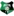 0:1  Valmiera FC Form: LLLL Form: WLDW |
0.18 vs -0.68 | 2.16 | 24% | ❌ | ⚽ 1.65 |
📉 Home team has a dip in form recently | 📉 Away team has a dip in form recently |
| Sun. 07 Jul. | Philippine Air Force FC  2:0  Philippine Army FC Form: LLLW Form: LLLL |
0.17 vs -0.89 | 24% | ✓ | ⚽⚽⚽ 3.56 |
📉 Home team has a dip in form recently | 📉 Away team has a dip in form recently | |
| Sat. 06 Jul. | York United FC  2:1  HFX Wanderers FC Form: DWWL Form: DDWW |
0.17 vs -0.97 | 2.08 | 23% | ✓ | ⚽⚽ 2.01 |
📉 Home team has a dip in form recently | |
| Sat. 06 Jul. | Fagiano Okayama  2:0  Vegalta Sendai Form: LWWL Form: LDDW |
0.16 vs -0.95 | 2.32 | 23% | ✓ | ⚽ 1.9 |
📉 Home team has a dip in form recently | 📉 Away team has a dip in form recently |
| Sun. 07 Jul. | CA Patronato  20:00  CSD Tristan Suarez Form: DLDW Form: LLWW |
0.16 vs -0.92 | 2.28 | 23% | ⚽ 1.46 |
📉 Home team has a dip in form recently | 📉 Away team has a dip in form recently | |
| Sun. 07 Jul. | FK Orsha  2:0  FK Slonim 2017 Form: DDWW Form: LDWL |
0.16 vs -1.03 | 23% | ✓ | ⚽ 1.67 |
📉 Away team has a dip in form recently | ||
| Sun. 07 Jul. | Uruguay 4:2 after pens Brazil Form: WWWW Form: WDDW |
-0.83 vs 0.16 | 3.5 | 23% | ❌ | ⚽ 1.34 |
📉 Away team has a dip in form recently | |
| Tue. 09 Jul. | Comerciantes FC  21:15  Deportivo Binacional Form: WDDW Form: WLWW |
0.16 vs -1.13 | 23% | ⚽ 1.48 |
📉 Home team has a dip in form recently | 📉 Away team has a dip in form recently | ||
| Sun. 07 Jul. | Philadelphia Union  0:0 New York Red Bulls Form: LLLL Form: DDWD |
0.16 vs -1.01 | 2.86 | 22% | ⁃ | ⚽⚽ 2.71 |
📉 Home team has a dip in form recently | 📉 Away team has a dip in form recently |
| Sat. 06 Jul. | St. George City FA  1:2  Sydney FC II Form: LLWL Form: LWDW |
0.16 vs -0.94 | 22% | ❌ | ⚽⚽ 2.52 |
📉 Home team has a dip in form recently | ||
| Sat. 06 Jul. | AFA Olaine  1:4 Riga FC II Form: LDLL Form: WDWW |
-0.54 vs 0.15 | 22% | ✓ | ⚽⚽⚽⚽ 4.52 |
📉 Home team has a dip in form recently | ||
| Tue. 09 Jul. | Spain 20:00 France Form: WWWW Form: DDWW |
-0.29 vs 0.15 | 3.3 | 22% | ⚽ 1.88 |
|||
| Sun. 07 Jul. | CA Alvarado  0:0'  CA Agropecuario Form: WLWD Form: DWLL |
0.15 vs -0.82 | 2.48 | 22% | ⚽ 1.14 |
📉 Home team has a dip in form recently | 📉 Away team has a dip in form recently | |
| Sun. 07 Jul. | FC Cincinnati  6:1 Inter Miami CF Form: WLWW Form: WWWW |
-1.04 vs 0.15 | 22% | ❌ | ⚽⚽⚽ 3.86 |
📉 Home team has a dip in form recently | 🏥🏥 Away team has MAJOR injuries | |
| Sat. 06 Jul. | Shimizu S-Pulse  2:0 JEF United Chiba Form: WLLW Form: WWLW |
0.14 vs -0.93 | 2.26 | 21% | ✓ | ⚽⚽ 2.23 |
🏥 📉 Home team has considerable injuries and a dip in form recently | 📉 Away team has a dip in form recently |
| Fri. 05 Jul. | Portugal 3:5 after pens France Form: WLWL Form: DDWW |
-0.14 vs 0.14 | 2.54 | 21% | ✓ | ⚽⚽ 2.51 |
📉 Home team has a dip in form recently | |
| Sat. 06 Jul. | Thróttur Reykjavík  4:1  Dalvík/Reynir Form: DWLL Form: LWLD |
-0.74 vs 0.14 | 21% | ❌ | ⚽⚽ 2.41 |
📉 Home team has a dip in form recently | 📉 Away team has a dip in form recently | |
| Sat. 06 Jul. | Coquimbo Unido  4:0  CD Cobresal Form: WDWW Form: LDLW |
0.14 vs -0.92 | 1.38 | 21% | ✓ | ⚽⚽ 2.07 |
📉 Away team has a dip in form recently | |
| Mon. 08 Jul. | Strømsgodset IF  18:00  Sandefjord Fotball Form: LWWD Form: LDDL |
0.13 vs -1.12 | 1.84 | 21% | ⚽⚽ 2.24 |
📉 Away team has a dip in form recently | ||
| Sun. 07 Jul. | Quilmes AC  21:30  CA Estudiantes Form: DLLL Form: LWLD |
0.13 vs -0.9 | 2.26 | 21% | 😴 0.73 |
📉 Home team has a dip in form recently | 📉 Away team has a dip in form recently | |
| Tue. 09 Jul. | Avaí FC  00:00  Grêmio Novorizontino Form: DWDD Form: WLDW |
0.13 vs -0.82 | 2.16 | 20% | ⚽ 1.48 |
📉 Home team has a dip in form recently | 📉 Away team has a dip in form recently | |
| Sun. 07 Jul. | Dong A Thanh Hoa FC  9:8 Ha Noi FC Form: WDLD Form: WLWD |
-0.91 vs 0.12 | 1.01 | 20% | ❌ | ⚽⚽ 2.87 |
🏥 📉 Home team has considerable injuries and a dip in form recently | 📉 Away team has a dip in form recently |
| Sat. 06 Jul. | Montevideo Wanderers Unknown  CA Progreso Form: LWWL Form: LLWD |
0.12 vs -0.98 | 20% | ⚽⚽ 2.41 |
📉 Home team has a dip in form recently | 🏥 📉 Away team has considerable injuries and a dip in form recently | ||
| Fri. 05 Jul. | FK Lida  1:2  ABFF U17 Form: WLDL Form: WLLW |
0.12 vs -1.08 | 20% | ❌ | ⚽ 1.99 |
📉 Home team has a dip in form recently | 📉 Away team has a dip in form recently | |
| Sat. 06 Jul. | Renofa Yamaguchi  1:0  Kagoshima United Form: WWLD Form: LWWL |
0.12 vs -0.99 | 2.16 | 19% | ✓ | ⚽ 1.57 |
📉 Home team has a dip in form recently | 📉 Away team has a dip in form recently |
| Fri. 05 Jul. | Club Plaza Colonia 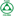 0:2  Albion FC Form: LLWL Form: DWLD |
0.12 vs -1.0 | 2.06 | 19% | ❌ | 😴 0.93 |
📉 Home team has a dip in form recently | 📉 Away team has a dip in form recently |
| Sun. 07 Jul. | Dnepr Mogilev  1:1'  Shakhter Soligorsk Form: LLLL Form: DDDW |
0.12 vs -0.92 | 19% | ⚽⚽ 2.34 |
📉 Home team has a dip in form recently | 📉 Away team has a dip in form recently | ||
| Sat. 06 Jul. | CA Boston River Unknown  Miramar Misiones Form: WLDL Form: WLWW |
0.11 vs -0.67 | 19% | ⚽ 1.38 |
📉 Home team has a dip in form recently | 📉 Away team has a dip in form recently | ||
| Fri. 05 Jul. | FK Ekibastuz  3:0  FC Arys Form: LWLW Form: LLLW |
0.11 vs -0.78 | 19% | ✓ | ⚽ 1.82 |
📉 Home team has a dip in form recently | 📉 Away team has a dip in form recently | |
| Sun. 07 Jul. | Ansan Greeners  1:2  Jeonnam Dragons Form: LLLW Form: WWDD |
-0.74 vs 0.11 | 2.06 | 19% | ✓ | ⚽⚽ 2.03 |
📉 Home team has a dip in form recently | 📉 Away team has a dip in form recently |
| Fri. 05 Jul. | Ceará Sporting Club  0:1  Santos FC Form: DLWL Form: WDWW |
-1.0 vs 0.11 | 3.2 | 19% | ✓ | ⚽⚽ 2.04 |
📉 Home team has a dip in form recently | 🏥 Away team has considerable injuries |
| Sat. 06 Jul. | Käpylän Pallo  0:0 Turun Palloseura Form: DLLD Form: DWWL |
-0.63 vs 0.1 | 18% | ⁃ | ⚽⚽ 2.91 |
📉 Home team has a dip in form recently | 📉 Away team has a dip in form recently | |
| Sat. 06 Jul. | Tartu JK Welco  2:2  FC Flora Tallinn U21 Form: WDDW Form: DLLL |
0.1 vs -0.6 | 1.64 | 18% | ⁃ | ⚽⚽⚽ 3.01 |
📉 Home team has a dip in form recently | 📉 Away team has a dip in form recently |
| Sun. 07 Jul. | SK Super Nova  2:3  FK Smiltene/BJSS Form: WWWL Form: LDWL |
0.1 vs -0.94 | 18% | ❌ | ⚽ 1.47 |
📉 Home team has a dip in form recently | 📉 Away team has a dip in form recently | |
| Sat. 06 Jul. | Mārupes SC  3:2  Ogre United Form: WWDW Form: WDDL |
0.1 vs -1.1 | 18% | ✓ | ⚽ 1.19 |
📉 Away team has a dip in form recently | ||
| Sun. 07 Jul. | Kalev Tallinn U21  3:5  Paide Linnameeskond U21 Form: WLLL Form: LWLW |
0.1 vs -0.6 | 1.4 | 18% | ❌ | ⚽⚽⚽⚽ 4.33 |
📉 Home team has a dip in form recently | 📉 Away team has a dip in form recently |
| Fri. 05 Jul. | FK Jetisay  2:3  SD Family Astana Form: WWDL Form: WLWW |
0.1 vs -0.76 | 18% | ❌ | ⚽⚽ 2.13 |
📉 Home team has a dip in form recently | 📉 Away team has a dip in form recently | |
| Sun. 07 Jul. | APIA Leichhardt FC  3:2  Sutherland Sharks FC Form: LLLL Form: WDDW |
0.09 vs -0.88 | 17% | ✓ | ⚽ 1.85 |
📉 Home team has a dip in form recently | 📉 Away team has a dip in form recently | |
| Sat. 06 Jul. | AMSD Atlético de Rafaela  0:0  Club de Gimnasia y Tiro Form: LLLD Form: WWWD |
0.09 vs -1.12 | 2.36 | 17% | ⁃ | 😴 0.36 |
📉 Home team has a dip in form recently | |
| Sun. 07 Jul. | Wollongong Wolves FC  1:2  Sydney Olympic FC Form: WWDW Form: LWWD |
0.08 vs -0.65 | 17% | ❌ | ⚽⚽ 2.51 |
|||
| Sun. 07 Jul. | CA Racing (Córdoba) 0:0'  CA All Boys Form: LWDL Form: DLWL |
0.08 vs -1.02 | 2.06 | 17% | 😴 0.53 |
📉 Home team has a dip in form recently | 📉 Away team has a dip in form recently | |
| Sun. 07 Jul. | CA Defensores Unidos (Zarate)  19:00  CA Aldosivi Form: DDLW Form: WWDW |
-0.61 vs 0.08 | 2.9 | 16% | 😴 0.65 |
📉 Home team has a dip in form recently | ||
| Sat. 06 Jul. | Tuloy FC  6:2  Loyola FC Form: WWLW Form: WLLL |
0.08 vs -0.85 | 16% | ✓ | ⚽⚽⚽⚽ 4.55 |
📉 Home team has a dip in form recently | 📉 Away team has a dip in form recently | |
| Mon. 08 Jul. | IFK Norrköping  18:00  Djurgårdens IF Form: LDLL Form: WWWW |
-0.54 vs 0.07 | 1.78 | 16% | ⚽⚽⚽ 3.11 |
📉 Home team has a dip in form recently | ||
| Sat. 06 Jul. | Dinamo 2 Minsk  1:2  Bumprom Gomel Form: LWWL Form: WLDW |
0.06 vs -0.67 | 15% | ❌ | ⚽ 1.14 |
📉 Home team has a dip in form recently | 📉 Away team has a dip in form recently | |
| Sun. 07 Jul. | BATE 2 Borisov  6:2  Torpedo-BelAZ 2 Zhodino Form: DDLW Form: WLLL |
0.06 vs -0.73 | 15% | ✓ | ⚽⚽ 2.14 |
📉 Home team has a dip in form recently | 📉 Away team has a dip in form recently | |
| Sun. 07 Jul. | Akzhayik Uralsk  1:2  FK Taraz Form: DDLL Form: WDWL |
0.06 vs -0.7 | 15% | ❌ | ⚽ 1.5 |
📉 Home team has a dip in form recently | 📉 Away team has a dip in form recently | |
| Sat. 06 Jul. | Albirex Niigata  3:4  Sagan Tosu Form: DDDW Form: WLLW |
0.05 vs -1.08 | 1.83 | 14% | ❌ | ⚽⚽ 2.28 |
📉 Home team has a dip in form recently | 📉 Away team has a dip in form recently |
| Sat. 06 Jul. | Western Springs AFC  8:9  Birkenhead United Form: LWLW Form: WDWW |
0.04 vs -0.33 | 13% | ❌ | ⚽⚽ 2.93 |
📉 Home team has a dip in form recently | ||
| Sun. 07 Jul. | Naftan Novopolotsk  1:4  FK Slutsk Form: LWDL Form: WLLL |
0.04 vs -0.79 | 13% | ❌ | ⚽⚽ 2.45 |
📉 Home team has a dip in form recently | 📉 Away team has a dip in form recently | |
| Sun. 07 Jul. | Navua FC  6:2  Lautoka FC Form: LWWL Form: WLLW |
-0.75 vs 0.04 | 1.52 | 13% | ❌ | ⚽⚽ 2.61 |
📉 Home team has a dip in form recently | 📉 Away team has a dip in form recently |
| Fri. 05 Jul. | Järvenpään Palloseura 0:0  FC KTP Form: DLWD Form: WLWW |
-0.56 vs 0.03 | 13% | ⁃ | ⚽⚽⚽ 3.59 |
📉 Home team has a dip in form recently | 📉 Away team has a dip in form recently | |
| Sat. 06 Jul. | CA Fénix  Unknown Defensor Sporting Club Form: WLLW Form: WWWD |
-0.69 vs 0.03 | 13% | ⚽ 1.2 |
📉 Home team has a dip in form recently | |||
| Sat. 06 Jul. | Young Lions 0:2 BG Tampines Rovers Form: LWWL Form: WWWW |
-0.72 vs 0.03 | 1.08 | 12% | ✓ | ⚽⚽⚽ 3.63 |
📉 Home team has a dip in form recently | |
| Mon. 08 Jul. | FC Inter Turku  16:00  FC Lahti Form: WDWW Form: DWDL |
0.02 vs -0.78 | 1.56 | 12% | ⚽⚽ 2.67 |
📉 Away team has a dip in form recently | ||
| Sun. 07 Jul. | Club Ferro Carril Oeste  23:10  Club Atlético San Martín (Tucumán) Form: WWLD Form: WWDL |
0.02 vs -0.77 | 2.4 | 11% | ⚽ 1.13 |
📉 Home team has a dip in form recently | 📉 Away team has a dip in form recently | |
| Sun. 07 Jul. | FC Astana  5:0  Kaspiy Aktau Form: LLLW Form: DLWW |
0.01 vs -0.8 | 11% | ✓ | ⚽ 1.78 |
📉 Home team has a dip in form recently | 📉 Away team has a dip in form recently | |
| Sat. 06 Jul. | Kashiwa Reysol  3:2  FC Tokyo Form: LLDW Form: DWWL |
0.01 vs -0.62 | 2.06 | 11% | ✓ | ⚽⚽ 2.14 |
📉 Home team has a dip in form recently | 📉 Away team has a dip in form recently |
| Sat. 06 Jul. | Ventforet Kofu  1:3  Tokushima Vortis Form: WDLD Form: WLWD |
0.01 vs -0.72 | 11% | ❌ | ⚽ 1.84 |
📉 Home team has a dip in form recently | 📉 Away team has a dip in form recently | |
| Sun. 07 Jul. | Esporte Clube Vitória 22:30  Criciúma Esporte Clube Form: WLWL Form: LLWD |
0.01 vs -0.99 | 11% | ⚽ 1.73 |
📉 Home team has a dip in form recently | 📉 Away team has a dip in form recently | ||
| Mon. 08 Jul. | Miramar Misiones 00:30 Danubio FC Form: WLWW Form: DDDW |
0.0 vs -0.62 | 2.3 | 10% | 😴 0.98 |
📉 Home team has a dip in form recently | 📉 Away team has a dip in form recently | |
| Fri. 05 Jul. | Los Angeles Galaxy 1:2  Los Angeles FC Form: WWWW Form: WDWW |
0.0 vs -0.7 | 3.15 | 10% | ❌ | ⚽⚽ 2.56 |
||
| Sun. 07 Jul. | Avispa Fukuoka  1:2  Kyoto Sanga Form: WWDW Form: WWLD |
0.0 vs -1.05 | 2.14 | 10% | ❌ | ⚽ 1.53 |
🏥 Home team has considerable injuries | 📉 Away team has a dip in form recently |
| Sun. 07 Jul. | UNAM Pumas  19:00 Club León FC Form: DWLD Form: LLWD |
0.0 vs -0.88 | 10% | ⚽⚽ 2.23 |
📉 Home team has a dip in form recently | 📉 Away team has a dip in form recently | ||
| Mon. 08 Jul. | Thór Akureyri  postponed  UMF Grindavík Form: DLDD Form: WDDD |
-0.0 vs -0.69 | 10% | ⚽ 1.96 |
📉 Home team has a dip in form recently | 📉 Away team has a dip in form recently | ||
| Sat. 06 Jul. | FCI Levadia U21  5:1  JK Tabasalu Form: WLWL Form: LWLW |
-0.0 vs -0.63 | 1.2 | 10% | ✓ | ⚽⚽ 2.74 |
📉 Home team has a dip in form recently | 📉 Away team has a dip in form recently |
| Sun. 07 Jul. | CA Chaco For Ever  20:30  CA Nueva Chicago Form: WDDL Form: LWDW |
-0.0 vs -0.77 | 2.08 | 10% | ⚽ 1.17 |
📉 Home team has a dip in form recently | ||
| Sun. 07 Jul. | Nasinu FC 1:4  Nadi FA Form: LWLW Form: LLLD |
-0.88 vs -0.01 | 1.83 | 10% | ✓ | ⚽⚽ 2.66 |
📉 Home team has a dip in form recently | 📉 Away team has a dip in form recently |
| Sun. 07 Jul. | Shan United 1:0 Myawady FC Form: DWWD Form: LW |
-0.01 vs -0.99 | 1.11 | 10% | ✓ | ⚽⚽⚽ 3.74 |
📉 Away team has a dip in form recently | |
| Fri. 05 Jul. | Forge FC  3:3  Vancouver FC Form: DWLD Form: DLWD |
-0.01 vs -0.72 | 1.47 | 10% | ⁃ | ⚽⚽ 2.23 |
📉 Home team has a dip in form recently | 📉 Away team has a dip in form recently |
| Sat. 06 Jul. | FC Juárez 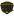 2:2  Atlas Guadalajara Form: WLWD Form: LWDL |
-0.01 vs -0.95 | 2.26 | 10% | ⁃ | ⚽⚽ 2.03 |
📉 Home team has a dip in form recently | 📉 Away team has a dip in form recently |
| Tue. 09 Jul. | FK Panevezys  16:30 HJK Helsinki Form: LLLW Form: WWLW |
-0.82 vs -0.02 | 10% | ⚽ 1.72 |
🏥 📉 Home team has considerable injuries and a dip in form recently | 📉 Away team has a dip in form recently | ||
| Sun. 07 Jul. | Detroit City FC  1:1  Tampa Bay Rowdies Form: WWLW Form: LWWL |
-0.63 vs -0.02 | 2.4 | 10% | ⁃ | ⚽⚽ 2.35 |
📉 Home team has a dip in form recently | 📉 Away team has a dip in form recently |
| Sun. 07 Jul. | CA San Miguel  1:0'  CA Chacarita Juniors Form: LWWD Form: WLWW |
-0.5 vs -0.02 | 10% | ⚽ 1.37 |
📉 Away team has a dip in form recently | |||
| Mon. 08 Jul. | AC Oulu  16:00  SJK Seinäjoki Form: WDWW Form: WDWW |
-0.03 vs -0.54 | 3.4 | 9% | ⚽⚽⚽ 3.35 |
|||
| Mon. 08 Jul. | Portland Timbers  03:30  Nashville SC Form: DWWW Form: DWWL |
-0.03 vs -0.79 | 1.87 | 9% | ⚽⚽ 2.57 |
📉 Away team has a dip in form recently | ||
| Tue. 09 Jul. | Amazonas FC  01:00  Vila Nova Futebol Clube (GO) Form: WLDW Form: WLWW |
-0.03 vs -0.84 | 2.3 | 9% | ⚽ 1.23 |
📉 Home team has a dip in form recently | 📉 Away team has a dip in form recently | |
| Sat. 06 Jul. | CA Atlanta  1:1  AA Estudiantes (Río Cuarto) Form: LWDD Form: WLWD |
-0.03 vs -0.56 | 2.58 | 9% | ⁃ | 😴 0.82 |
📉 Home team has a dip in form recently | 📉 Away team has a dip in form recently |
| Sat. 06 Jul. | Uruguay Montevideo FC  1:1  CA Atenas de San Carlos Form: WWWW Form: WLWL |
-0.05 vs -0.73 | 1.45 | 9% | ⁃ | 😴 0.85 |
📉 Away team has a dip in form recently | |
| Sun. 07 Jul. | Pittsburgh Riverhounds SC  0:1  Monterey Bay FC Form: LLDL Form: LLWL |
-0.05 vs -0.73 | 1.53 | 9% | ❌ | 😴 0.77 |
📉 Home team has a dip in form recently | 📉 Away team has a dip in form recently |
| Sat. 06 Jul. | Brusque Futebol Clube (SC)  0:0  Associação Atlética Ponte Preta Form: DDDD Form: LWDD |
-0.05 vs -0.82 | 9% | ⁃ | ⚽ 1.26 |
📉 Home team has a dip in form recently | 📉 Away team has a dip in form recently | |
| Fri. 05 Jul. | FK Kauno Zalgiris  1:0  FK Zalgiris Vilnius Form: WWLW Form: WWLL |
-0.05 vs -0.52 | 9% | ✓ | ⚽⚽ 2.2 |
📉 Home team has a dip in form recently | 📉 Away team has a dip in form recently | |
| Tue. 09 Jul. | Víkingur Reykjavík  19:45  Shamrock Rovers Form: LWDL Form: LWLW |
-0.06 vs -0.67 | 9% | ⚽ 1.77 |
📉 Home team has a dip in form recently | 📉 Away team has a dip in form recently | ||
| Sun. 07 Jul. | CD Maipú  19:30  Arsenal FC Form: DWWL Form: LLLW |
-0.07 vs -1.15 | 2.06 | 9% | 😴 0.97 |
📉 Home team has a dip in form recently | 🏥 📉 Away team has considerable injuries and a dip in form recently | |
| Sun. 07 Jul. | Kristiansund BK  16:00  Fredrikstad FK Form: DLLW Form: WWDL |
-0.44 vs -0.07 | 2.12 | 9% | ⚽⚽ 2.79 |
📉 Home team has a dip in form recently | 📉 Away team has a dip in form recently | |
| Sat. 06 Jul. | ÍBV Vestmannaeyjar  1:0  Leiknir Reykjavík Form: WWWD Form: LLWL |
-0.07 vs -0.39 | 9% | ✓ | ⚽⚽ 2.66 |
📉 Away team has a dip in form recently | ||
| Sat. 06 Jul. | Jeju United  3:2  FC Seoul Form: LWLW Form: WWWL |
-0.86 vs -0.07 | 2.44 | 9% | ❌ | ⚽⚽ 2.54 |
🏥 📉 Home team has considerable injuries and a dip in form recently | 📉 Away team has a dip in form recently |
| Sun. 07 Jul. | Tacuarembó FC  18:30  Colon FC de Uruguay Form: LDLL Form: DWLW |
-0.07 vs -0.51 | 9% | ⚽⚽ 2.17 |
🏥 📉 Home team has considerable injuries and a dip in form recently | 📉 Away team has a dip in form recently | ||
| Sun. 07 Jul. | Shakhter Karaganda 2:1  Zhetysu Taldykorgan Form: LLLL Form: WLDL |
-0.08 vs -0.54 | 8% | ✓ | ⚽ 1.18 |
📉 Home team has a dip in form recently | 📉 Away team has a dip in form recently | |
| Tue. 09 Jul. | The New Saints  19:00 FK Decic Tuzi Form: WWWL Form: DLWL |
-0.4 vs -0.08 | 8% | ⚽ 1.82 |
📉 Home team has a dip in form recently | 📉 Away team has a dip in form recently | ||
| Tue. 09 Jul. | Hamrun Spartans 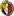 17:45 Lincoln Red Imps FC Form: WWWD Form: WWWD |
-0.08 vs -0.21 | 8% | ⚽⚽ 2.64 |
||||
| Sat. 06 Jul. | Delfines del Este FC  Unknown  Universidad O&M FC Form: DLWD Form: DDWW |
-0.08 vs -0.37 | 8% | ⚽ 1.22 |
📉 Home team has a dip in form recently | |||
| Sun. 07 Jul. | FK Molodechno  1:0  BK Maxline Vitebsk Form: WWLW Form: LWLW |
-0.09 vs -0.33 | 8% | ✓ | ⚽⚽ 2.96 |
📉 Home team has a dip in form recently | 📉 Away team has a dip in form recently | |
| Sat. 06 Jul. | FK Smorgon  0:0  BATE Borisov Form: LWLD Form: LWLD |
-0.68 vs -0.09 | 8% | ⁃ | ⚽⚽⚽ 3.18 |
📉 Home team has a dip in form recently | 📉 Away team has a dip in form recently | |
| Sat. 06 Jul. | Sogdiana Jizzakh  1:0 AET  Neftchi Fergana Form: LWWW Form: DLDL |
-0.48 vs -0.09 | 8% | ❌ | ⚽ 1.23 |
📉 Away team has a dip in form recently | ||
| Sun. 07 Jul. | CF Montréal  1:1  Vancouver Whitecaps FC Form: DLWL Form: LLWW |
-0.09 vs -0.54 | 2.84 | 8% | ⁃ | ⚽⚽ 2.87 |
📉 Home team has a dip in form recently | 📉 Away team has a dip in form recently |
| Mon. 08 Jul. | Västerås SK  18:00  BK Häcken Form: LLDD Form: LDLL |
-0.6 vs -0.1 | 8% | ⚽ 1.98 |
📉 Home team has a dip in form recently | 📉 Away team has a dip in form recently | ||
| Fri. 05 Jul. | Colorado Rapids  2:1  Sporting Kansas City Form: WWWL Form: LLLW |
-0.11 vs -0.73 | 8% | ✓ | ⚽⚽ 2.65 |
📉 Home team has a dip in form recently | 📉 Away team has a dip in form recently | |
| Sat. 06 Jul. | Tobol Kostanay  2:0  FK Aktobe Form: LDWW Form: LWLL |
-0.11 vs -0.5 | 8% | ✓ | ⚽ 1.72 |
📉 Away team has a dip in form recently | ||
| Sat. 06 Jul. | CA Brown (Adrogué) 0:0  CA Talleres (Remedios de Escalada) Form: DDLD Form: WDWD |
-0.11 vs -0.53 | 3.15 | 8% | ⁃ | 😴 0.55 |
📉 Home team has a dip in form recently | 📉 Away team has a dip in form recently |
| Sat. 06 Jul. | KR Reykjavík  1:1  Stjarnan Gardabaer Form: LDWW Form: WLWL |
-0.11 vs -0.57 | 2.24 | 8% | ⁃ | ⚽⚽ 2.71 |
📉 Away team has a dip in form recently | |
| Sat. 06 Jul. | Vestri Ísafjördur  2:2  Breidablik Kópavogur Form: DLWW Form: DLLD |
-0.63 vs -0.12 | 8% | ⁃ | ⚽⚽ 2.25 |
📉 Home team has a dip in form recently | 📉 Away team has a dip in form recently | |
| Sun. 07 Jul. | FK Ostrovets  3:3  Niva Dolbizno Form: WDDW Form: DWWW |
-0.27 vs -0.12 | 8% | ⁃ | ⚽⚽⚽ 3.2 |
📉 Home team has a dip in form recently | ||
| Sun. 07 Jul. | Valour FC  22:00  Cavalry FC Form: WLLL Form: DWDD |
-0.6 vs -0.12 | 1.42 | 8% | ⚽ 1.65 |
📉 Home team has a dip in form recently | 📉 Away team has a dip in form recently | |
| Fri. 05 Jul. | Rhode Island FC  3:3  Indy Eleven Form: DWWD Form: WWLD |
-0.12 vs -0.38 | 2.42 | 8% | ⁃ | ⚽⚽ 2.68 |
📉 Away team has a dip in form recently | |
| Fri. 05 Jul. | NSÍ Runavík 4:0 07 Vestur Form: LLLW Form: LWWL |
-0.12 vs -0.54 | 1.47 | 8% | ✓ | ⚽⚽ 2.81 |
📉 Home team has a dip in form recently | 📉 Away team has a dip in form recently |
| Sat. 06 Jul. | Ordabasy Shymkent  2:2  Yelimay Semey Form: WWWD Form: WDDD |
-0.13 vs -0.4 | 7% | ⁃ | ⚽ 1.99 |
📉 Away team has a dip in form recently | ||
| Sat. 06 Jul. | Salon Palloilijat  0:1  FF Jaro Form: DDLW Form: LDWW |
-0.13 vs -0.34 | 7% | ❌ | ⚽ 1.8 |
📉 Home team has a dip in form recently | ||
| Sun. 07 Jul. | Deportivo Guadalajara  0:0  Deportivo Toluca Form: WDDL Form: WLLD |
-0.13 vs -0.69 | 7% | ⁃ | ⚽ 1.53 |
📉 Home team has a dip in form recently | 📉 Away team has a dip in form recently | |
| Mon. 08 Jul. | Seongnam FC  11:30  Gyeongnam FC Form: WWLL Form: DLLD |
-0.13 vs -0.53 | 2.16 | 7% | ⚽ 1.66 |
📉 Home team has a dip in form recently | 📉 Away team has a dip in form recently | |
| Sat. 06 Jul. | CSD Cooper  0:0 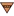 IA Sud América Form: WLDL Form: WWDL |
-0.13 vs -0.89 | 1.94 | 7% | ⁃ | 😴 0.96 |
📉 Home team has a dip in form recently | 📉 Away team has a dip in form recently |
| Sat. 06 Jul. | CSD Cooper 0:0 IA Sud América Form: WLDL Form: WWDL |
-0.13 vs -0.89 | 1.94 | 7% | ⁃ | 😴 0.96 |
📉 Home team has a dip in form recently | 📉 Away team has a dip in form recently |
| Mon. 08 Jul. | FH Hafnarfjördur  20:15  KA Akureyri Form: WWDD Form: WLLW |
-0.14 vs -0.55 | 7% | ⚽⚽ 2.77 |
📉 Home team has a dip in form recently | 📉 Away team has a dip in form recently | ||
| Sat. 06 Jul. | CSD Madryn  1:0  CA Mitre Form: DWLW Form: DDWL |
-0.14 vs -0.65 | 2.06 | 7% | ✓ | 😴 0.11 |
📉 Home team has a dip in form recently | 📉 Away team has a dip in form recently |
| Sun. 07 Jul. | FK Haugesund 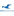 1:2  Sarpsborg 08 FF Form: DWLW Form: WLWW |
-0.14 vs -0.68 | 2.34 | 7% | ❌ | ⚽⚽ 2.31 |
📉 Home team has a dip in form recently | 📉 Away team has a dip in form recently |
| Fri. 05 Jul. | Sanfrecce Hiroshima  1:3  Vissel Kobe Form: WDDL Form: LDWW |
-0.15 vs -0.32 | 2.38 | 7% | ❌ | ⚽ 1.77 |
📉 Home team has a dip in form recently | |
| Sat. 06 Jul. | JFK Ventspils 0:2  JDFS Alberts Form: LDLL Form: WLWW |
-0.15 vs -0.19 | 7% | ❌ | ⚽ 1.26 |
📉 Home team has a dip in form recently | 📉 Away team has a dip in form recently | |
| Sat. 06 Jul. | JFK Ventspils 0:2 JDFS Alberts Form: LDLL Form: WLWW |
-0.15 vs -0.19 | 7% | ❌ | ⚽ 1.26 |
📉 Home team has a dip in form recently | 📉 Away team has a dip in form recently | |
| Sat. 06 Jul. | Atlántico FC  Unknown  Moca FC Form: LLWW Form: DWWW |
-0.15 vs -0.55 | 7% | ⚽ 1.16 |
📉 Home team has a dip in form recently | |||
| Sat. 06 Jul. | Santiago Wanderers  2:2  CD Palestino Form: WWWD Form: DWLW |
-0.45 vs -0.16 | 1.96 | 7% | ⁃ | ⚽ 1.52 |
📉 Away team has a dip in form recently | |
| Mon. 08 Jul. | Sport Club Internacional  00:30  Clube de Regatas Vasco da Gama Form: WWLD Form: LWLD |
-0.16 vs -1.21 | 1.53 | 7% | ⚽⚽ 2.65 |
🏥🏥 📉 Home team has MAJOR injuries and a dip in form recently | 📉 Away team has a dip in form recently | |
| Sat. 06 Jul. | Sabah FC 0:3 Terengganu FC Form: DWWL Form: DLWD |
-0.16 vs -0.56 | 7% | ❌ | ⚽⚽ 2.61 |
📉 Home team has a dip in form recently | 📉 Away team has a dip in form recently | |
| Sun. 07 Jul. | Ituano Futebol Clube (SP)  20:00  Botafogo FC Form: LLDD Form: WWWW |
-0.17 vs -0.67 | 2.8 | 7% | 😴 0.61 |
📉 Home team has a dip in form recently | ||
| Sun. 07 Jul. | São Paulo Futebol Clube  2:0  Red Bull Bragantino Form: LWWW Form: WLDW |
-0.17 vs -0.81 | 7% | ✓ | ⚽ 1.85 |
🏥 Home team has considerable injuries | 📉 Away team has a dip in form recently | |
| Sat. 06 Jul. | Albirex Niigata (S) 0:6 Geylang International Form: LLLL Form: WWDD |
-0.17 vs -0.57 | 7% | ❌ | ⚽⚽⚽ 3.67 |
📉 Home team has a dip in form recently | 📉 Away team has a dip in form recently | |
| Sat. 06 Jul. | United City FC 2:2  One Taguig FC Form: DWWD Form: WWWD |
-0.33 vs -0.17 | 1.01 | 7% | ⁃ | ⚽⚽ 2.0 |
||
| Sun. 07 Jul. | FK Metta  1:0 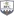 BFC Daugavpils Form: LLLW Form: LDWL |
-0.17 vs -0.59 | 2.74 | 7% | ✓ | ⚽ 1.44 |
📉 Home team has a dip in form recently | 📉 Away team has a dip in form recently |
| Sun. 07 Jul. | Hamarkameratene  0:0  Tromsø IL Form: WWLL Form: DWLL |
-0.46 vs -0.17 | 3.05 | 7% | ⁃ | ⚽⚽ 2.42 |
📉 Home team has a dip in form recently | 📉 Away team has a dip in form recently |
| Sat. 06 Jul. | St George Saints FC  2:2  Western Sydney Wanderers II Form: LLLD Form: WWWW |
-0.25 vs -0.18 | 6% | ⁃ | ⚽⚽⚽ 3.34 |
📉 Home team has a dip in form recently | ||
| Sun. 07 Jul. | Guarani Futebol Clube (SP)  22:30  Sport Club do Recife Form: LLDL Form: LWDW |
-0.18 vs -0.33 | 6% | ⚽ 1.71 |
📉 Home team has a dip in form recently | |||
| Sat. 06 Jul. | Mjällby AIF  3:2  IK Sirius Form: LLWW Form: DDLW |
-0.18 vs -0.38 | 2.16 | 6% | ✓ | ⚽⚽ 2.11 |
📉 Home team has a dip in form recently | 📉 Away team has a dip in form recently |
| Sun. 07 Jul. | Central Coast Mariners II  0:1  Marconi Stallions FC Form: WWDW Form: LWWD |
-0.36 vs -0.18 | 6% | ✓ | ⚽⚽⚽ 3.73 |
|||
| Sat. 06 Jul. | Energetik-BGU Minsk  0:0  FK Baranovichi Form: LLDD Form: LLWD |
-0.18 vs -0.66 | 6% | ⁃ | ⚽ 1.4 |
📉 Home team has a dip in form recently | 📉 Away team has a dip in form recently | |
| Sun. 07 Jul. | CA Güemes  0:0' Club Social y Atlético Guillermo Brown Form: WLDL Form: DWDW |
-0.18 vs -0.7 | 1.76 | 6% | 😴 0.6 |
📉 Home team has a dip in form recently | ||
| Sun. 07 Jul. | KFUM-Kameratene Oslo  1:2  Viking FK Form: WDDD Form: LWWD |
-0.41 vs -0.18 | 2.42 | 6% | ✓ | ⚽⚽ 2.22 |
📉 Home team has a dip in form recently | |
| Sat. 06 Jul. | FC Elva  0:0  Harju JK Laagri Form: LDLW Form: DDWD |
-0.19 vs -0.44 | 1.61 | 6% | ⁃ | ⚽⚽ 2.8 |
📉 Home team has a dip in form recently | 📉 Away team has a dip in form recently |
| Fri. 05 Jul. | Charleston Battery  2:0  Birmingham Legion FC Form: LDWW Form: WWLL |
-0.19 vs -0.44 | 1.64 | 6% | ✓ | ⚽ 1.85 |
📉 Away team has a dip in form recently | |
| Mon. 08 Jul. | UCV Moquegua  19:00  Academia Deportiva Cantolao Form: DWDL Form: LLDL |
-0.19 vs -0.52 | 6% | 😴 0.74 |
📉 Home team has a dip in form recently | 📉 Away team has a dip in form recently | ||
| Fri. 05 Jul. | FK Tukums 2000 II  0:2  Leevon PPK Form: LLLL Form: LWLW |
-0.21 vs -0.19 | 6% | ✓ | ⚽ 1.88 |
📉 Home team has a dip in form recently | 📉 Away team has a dip in form recently | |
| Sat. 06 Jul. | FK Vitebsk  0:1  Isloch Minsk Region Form: LWDL Form: WLDW |
-0.19 vs -0.47 | 6% | ❌ | 😴 0.97 |
📉 Home team has a dip in form recently | 📉 Away team has a dip in form recently | |
| Sun. 07 Jul. | Ehime FC  0:4  Thespa Gunma Form: WWWW Form: DLLL |
-0.2 vs -0.63 | 2.26 | 6% | ❌ | ⚽ 1.68 |
📉 Away team has a dip in form recently | |
| Sun. 07 Jul. | Tailevu Naitasiri FC  1:1  Ba FC Form: LLLW Form: LWWD |
-0.24 vs -0.2 | 6% | ⁃ | ⚽ 1.31 |
📉 Home team has a dip in form recently | ||
| Sat. 06 Jul. | Daegu FC  3:3  Pohang Steelers Form: WLLD Form: WDWD |
-0.2 vs -0.48 | 3.2 | 6% | ⁃ | ⚽ 1.46 |
📉 Home team has a dip in form recently | 📉 Away team has a dip in form recently |
| Sun. 07 Jul. | Qyzyljar Petropavlovsk  1:1  Kairat Almaty Form: DWDL Form: DWWL |
-0.21 vs -0.54 | 6% | ⁃ | 😴 0.91 |
📉 Home team has a dip in form recently | 📉 Away team has a dip in form recently | |
| Sun. 07 Jul. | CD Everton 20:00 Club Universidad de Chile Form: WWLL Form: DWWD |
-0.44 vs -0.21 | 2.06 | 6% | ⚽⚽ 2.09 |
🏥 📉 Home team has considerable injuries and a dip in form recently | ||
| Sun. 07 Jul. | Sydney United 58 FC 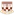 06:00  Blacktown City FC Form: WWLD Form: LWDL |
-0.21 vs -0.29 | 6% | ⚽⚽ 2.47 |
📉 Home team has a dip in form recently | 📉 Away team has a dip in form recently | ||
| Sat. 06 Jul. | CA Cerro Unknown Cerro Largo FC Form: WWWL Form: LWDW |
-0.22 vs -0.77 | 6% | ⚽ 1.44 |
📉 Home team has a dip in form recently | 🏥 Away team has considerable injuries | ||
| Sun. 07 Jul. | IFK Mariehamn  0:3  FC Haka Form: LDLW Form: WDWL |
-0.22 vs -0.38 | 2.42 | 6% | ❌ | ⚽ 1.64 |
📉 Home team has a dip in form recently | 📉 Away team has a dip in form recently |
| Sat. 06 Jul. | Gamba Osaka  4:0  Yokohama F. Marinos Form: WWDL Form: WLLL |
-0.22 vs -0.55 | 2.52 | 6% | ✓ | ⚽ 1.78 |
📉 Home team has a dip in form recently | 📉 Away team has a dip in form recently |
| Sun. 07 Jul. | FC San Marcos  21:00  Alianza Universidad Form: WLWW Form: WWDW |
-0.48 vs -0.23 | 2.04 | 5% | ⚽⚽ 2.94 |
📉 Home team has a dip in form recently | ||
| Sun. 07 Jul. | Deportivo Saprissa  18:00  CS Herediano Form: WWLW Form: WDLL |
-0.23 vs -0.95 | 1.09 | 5% | ⚽⚽ 2.27 |
🏥🏥 📉 Home team has MAJOR injuries and a dip in form recently | 🏥 📉 Away team has considerable injuries and a dip in form recently | |
| Sun. 07 Jul. | Liaoning Tieren  2:0  Chongqing Tonglianglong Form: DDWL Form: WWWL |
-0.37 vs -0.23 | 1.6 | 5% | ❌ | ⚽ 1.97 |
📉 Home team has a dip in form recently | 📉 Away team has a dip in form recently |
| Sat. 06 Jul. | Fujieda MYFC  3:1  Mito HollyHock Form: WLLW Form: WWLD |
-0.23 vs -0.66 | 2.76 | 5% | ✓ | ⚽ 1.18 |
📉 Home team has a dip in form recently | 📉 Away team has a dip in form recently |
| Sat. 06 Jul. | Shanghai Shenhua  6:0  Shandong Taishan Form: DWWW Form: DWDL |
-0.23 vs -0.38 | 1.7 | 5% | ✓ | ⚽ 1.49 |
📉 Away team has a dip in form recently | |
| Sun. 07 Jul. | Club Atlético Gimnasia y Esgrima (Jujuy)  20:00  CA San Martín (San Juan) Form: WLLW Form: WWDD |
-0.24 vs -0.48 | 2.54 | 5% | ⚽ 1.06 |
📉 Home team has a dip in form recently | 📉 Away team has a dip in form recently | |
| Sat. 06 Jul. | Tokyo Verdy  1:1  Cerezo Osaka Form: LWLW Form: WDWW |
-0.24 vs -0.52 | 3.15 | 5% | ⁃ | ⚽ 1.79 |
📉 Home team has a dip in form recently | |
| Tue. 09 Jul. | UE Santa Coloma  19:00 FC Ballkani Form: WDDW Form: WWWL |
-0.24 vs -0.36 | 5% | 😴 0.77 |
📉 Home team has a dip in form recently | 📉 Away team has a dip in form recently | ||
| Mon. 08 Jul. | San Jose Earthquakes  01:30  Chicago Fire FC Form: LLLL Form: WWLL |
-0.25 vs -0.67 | 2.26 | 5% | ⚽⚽ 2.1 |
📉 Home team has a dip in form recently | 📉 Away team has a dip in form recently | |
| Sun. 07 Jul. | Chungbuk Cheongju FC  2:3  Seoul E-Land Form: LDLW Form: WWLL |
-0.46 vs -0.26 | 2.26 | 5% | ✓ | ⚽ 1.2 |
📉 Home team has a dip in form recently | 📉 Away team has a dip in form recently |
| Sat. 06 Jul. | Cangzhou Mighty Lions  1:1  Shenzhen Peng City Form: LLLL Form: WWWL |
-0.38 vs -0.27 | 2.32 | 5% | ⁃ | ⚽⚽ 2.15 |
📉 Home team has a dip in form recently | 🏥🏥 📉 Away team has MAJOR injuries and a dip in form recently |
| Mon. 08 Jul. | Colorado Rapids 02:30  St. Louis CITY SC Form: WWWL Form: LLDL |
-0.27 vs -0.76 | 1.7 | 5% | ⚽ 1.96 |
📉 Home team has a dip in form recently | 📉 Away team has a dip in form recently | |
| Fri. 05 Jul. | Shakhter 2 Soligorsk  1:4  Volna Pinsk Form: LLDL Form: WLWW |
-0.27 vs -0.34 | 5% | ❌ | ⚽ 1.8 |
📉 Home team has a dip in form recently | 📉 Away team has a dip in form recently | |
| Sun. 07 Jul. | CD Magallanes  3:0'  Unión Española Form: WWWL Form: WLWD |
-0.51 vs -0.27 | 2.34 | 5% | ⚽⚽ 2.93 |
📉 Home team has a dip in form recently | 📉 Away team has a dip in form recently | |
| Sun. 07 Jul. | Yanbian Longding  0:5  Suzhou Dongwu Form: WLLD Form: DWWL |
-0.28 vs -0.5 | 2.3 | 4% | ❌ | ⚽⚽ 2.05 |
📉 Home team has a dip in form recently | 📉 Away team has a dip in form recently |
| Sat. 06 Jul. | Atlético San Cristóbal  Unknown  Atlético Pantoja Form: LLLW Form: LLWD |
-0.32 vs -0.28 | 4% | ⚽⚽ 2.76 |
📉 Home team has a dip in form recently | 📉 Away team has a dip in form recently | ||
| Sat. 06 Jul. | Kaysar Kyzylorda 0:1  FC Zhenis Astana Form: DWLL Form: LDLW |
-0.28 vs -0.46 | 4% | ❌ | ⚽ 1.29 |
📉 Home team has a dip in form recently | 📉 Away team has a dip in form recently | |
| Sun. 07 Jul. | CA Fénix 1:0 CA River Plate Montevideo Form: WLLW Form: LDLD |
-0.28 vs -0.57 | 4% | ✓ | 😴 0.9 |
📉 Home team has a dip in form recently | 📉 Away team has a dip in form recently | |
| Mon. 08 Jul. | Houston Dynamo FC  01:30 Los Angeles FC Form: DDWW Form: WDWW |
-0.3 vs -0.43 | 2.8 | 4% | ⚽⚽ 2.54 |
|||
| Sat. 06 Jul. | ÍF Fuglafjördur 0:1 EB/Streymur Form: LLLL Form: WWWL |
-0.3 vs -0.46 | 4% | ❌ | ⚽⚽ 2.42 |
📉 Home team has a dip in form recently | 📉 Away team has a dip in form recently | |
| Tue. 09 Jul. | San Antonio FC  21:00  CSD Vargas Torres Form: LDLL Form: DLLD |
-0.31 vs -0.39 | 4% | 😴 0.72 |
📉 Home team has a dip in form recently | 📉 Away team has a dip in form recently | ||
| Sun. 07 Jul. | IFK Värnamo  2:0  IFK Göteborg Form: DWLW Form: LDWL |
-0.4 vs -0.31 | 2.62 | 4% | ❌ | ⚽ 1.59 |
📉 Home team has a dip in form recently | 📉 Away team has a dip in form recently |
| Sun. 07 Jul. | CA San Telmo  0:0  Gimnasia y Esgrima de Mendoza Form: DWWD Form: WWDW |
-0.31 vs -0.48 | 2.4 | 4% | ⁃ | ⚽ 1.53 |
||
| Sat. 06 Jul. | Iwaki FC  0:1  Oita Trinita Form: DWLL Form: WLLD |
-0.31 vs -0.57 | 1.95 | 4% | ❌ | ⚽ 1.24 |
📉 Home team has a dip in form recently | 📉 Away team has a dip in form recently |
| Sun. 07 Jul. | CA Progreso 3:2 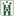 Racing Club de Montevideo Form: LLWD Form: LDWD |
-0.55 vs -0.31 | 2.36 | 4% | ❌ | ⚽⚽ 2.28 |
🏥 📉 Home team has considerable injuries and a dip in form recently | 📉 Away team has a dip in form recently |
| Sat. 06 Jul. | Club Almagro 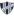 0:0  CA Temperley Form: DLDD Form: WWWD |
-0.32 vs -0.35 | 2.74 | 4% | ⁃ | ⚽ 1.81 |
📉 Home team has a dip in form recently | |
| Sat. 06 Jul. | Lokomotiv Gomel  0:2  Belshina Bobruisk Form: LWDL Form: DWWW |
-0.32 vs -0.33 | 4% | ❌ | ⚽ 1.73 |
📉 Home team has a dip in form recently | ||
| Sat. 06 Jul. | Venezuela 4:5 after pens Canada Form: DWLL Form: LWDW |
-0.32 vs -0.56 | 4% | ❌ | 😴 0.95 |
🏥 📉 Home team has considerable injuries and a dip in form recently | ||
| Fri. 05 Jul. | Suwon FC 1:1  Ulsan HD FC Form: LWWD Form: WWLD |
-0.53 vs -0.32 | 2.26 | 4% | ⁃ | ⚽⚽ 2.33 |
🏥 📉 Away team has considerable injuries and a dip in form recently | |
| Sun. 07 Jul. | Gangwon FC  2:0  Gwangju FC Form: WLLL Form: WWLL |
-0.33 vs -0.69 | 2.84 | 3% | ✓ | ⚽ 1.59 |
🏥 📉 Home team has considerable injuries and a dip in form recently | 🏥 📉 Away team has considerable injuries and a dip in form recently |
| Sat. 06 Jul. | Club Deportivo Maldonado Unknown Racing Club de Montevideo Form: LDLD Form: LDWD |
-0.38 vs -0.34 | 2.36 | 3% | ⚽ 1.5 |
📉 Home team has a dip in form recently | 📉 Away team has a dip in form recently | |
| Fri. 05 Jul. | FC Dallas  3:2 Portland Timbers Form: WWLL Form: DWWW |
-0.34 vs -0.89 | 3% | ✓ | ⚽⚽ 2.35 |
🏥🏥 📉 Home team has MAJOR injuries and a dip in form recently | ||
| Sun. 07 Jul. | Real Salt Lake City  5:2  Atlanta United FC Form: WDWL Form: DWDW |
-0.35 vs -0.55 | 1.6 | 3% | ✓ | ⚽⚽ 2.64 |
📉 Home team has a dip in form recently | |
| Sun. 07 Jul. | Qingdao Hainiu 3:1  Qingdao West Coast Form: WWWL Form: LLWL |
-0.35 vs -0.55 | 1.85 | 3% | ✓ | ⚽ 1.85 |
📉 Home team has a dip in form recently | 📉 Away team has a dip in form recently |
| Sat. 06 Jul. | Querétaro FC  1:2  Club Tijuana Form: LLDL Form: LWWL |
-0.35 vs -0.59 | 3% | ❌ | ⚽ 1.58 |
📉 Home team has a dip in form recently | 📉 Away team has a dip in form recently | |
| Fri. 05 Jul. | Fluminense Football Club  1:1 Sport Club Internacional Form: LLLL Form: WWLD |
-0.35 vs -1.07 | 1.83 | 3% | ⁃ | ⚽⚽ 2.09 |
🏥🏥 📉 Home team has MAJOR injuries and a dip in form recently | 🏥🏥 📉 Away team has MAJOR injuries and a dip in form recently |
| Sat. 06 Jul. | CS Cerrito  2:1  Juventud de Las Piedras Form: LLWW Form: LLLW |
-0.4 vs -0.37 | 1.84 | 3% | ❌ | ⚽ 1.45 |
📉 Home team has a dip in form recently | 📉 Away team has a dip in form recently |
| Sun. 07 Jul. | Cruzeiro Esporte Clube  20:00 Sport Club Corinthians Paulista Form: LWLW Form: LDDL |
-0.37 vs -0.61 | 3% | ⚽ 1.44 |
📉 Home team has a dip in form recently | 🏥 📉 Away team has considerable injuries and a dip in form recently | ||
| Sun. 07 Jul. | Pirata FC  19:15  Deportivo Llacuabamba Form: LLWD Form: LWWD |
-0.47 vs -0.37 | 3% | ⚽⚽⚽ 3.44 |
📉 Home team has a dip in form recently | |||
| Mon. 08 Jul. | Botafogo de Futebol e Regatas  00:30  Clube Atlético Mineiro Form: DLWD Form: WDLD |
-0.38 vs -0.86 | 2% | ⚽ 1.77 |
🏥🏥 📉 Home team has MAJOR injuries and a dip in form recently | 🏥🏥 📉 Away team has MAJOR injuries and a dip in form recently | ||
| Fri. 05 Jul. | Balestier Khalsa 4:2 Brunei DPMM FC Form: WLDW Form: LDLL |
-0.38 vs -0.43 | 1.57 | 2% | ✓ | ⚽⚽ 2.76 |
📉 Home team has a dip in form recently | 📉 Away team has a dip in form recently |
| Sat. 06 Jul. | Heilongjiang Ice City  1:3  Guangzhou FC Form: WLLW Form: WLDD |
-0.39 vs -0.44 | 3.1 | 2% | ❌ | ⚽⚽ 2.71 |
📉 Home team has a dip in form recently | 📉 Away team has a dip in form recently |
| Mon. 08 Jul. | Sporting Kansas City 01:30 FC Dallas Form: LLLW Form: WWLL |
-0.4 vs -0.92 | 1.9 | 2% | ⚽⚽ 2.53 |
📉 Home team has a dip in form recently | 🏥🏥 📉 Away team has MAJOR injuries and a dip in form recently | |
| Sat. 06 Jul. | Júbilo Iwata 2:2  Kawasaki Frontale Form: DDWL Form: LDDD |
-0.44 vs -0.4 | 2.2 | 2% | ⁃ | ⚽⚽ 2.78 |
📉 Home team has a dip in form recently | 🏥 📉 Away team has considerable injuries and a dip in form recently |
| Fri. 05 Jul. | Puebla FC 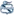 1:0  Santos Laguna Form: LLLL Form: DLLL |
-0.4 vs -0.49 | 2.46 | 2% | ✓ | ⚽⚽⚽ 3.1 |
📉 Home team has a dip in form recently | 📉 Away team has a dip in form recently |
| Sun. 07 Jul. | Atlético Clube Goianiense  22:30 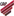 Club Athletico Paranaense Form: LDDD Form: DDLW |
-0.4 vs -0.61 | 2% | ⚽ 1.97 |
📉 Home team has a dip in form recently | 🏥 📉 Away team has considerable injuries and a dip in form recently | ||
| Sun. 07 Jul. | Esporte Clube Juventude  20:00  Grêmio Foot-Ball Porto Alegrense Form: LWLW Form: LLDW |
-0.64 vs -0.4 | 2% | ⚽ 1.83 |
📉 Home team has a dip in form recently | 🏥 📉 Away team has considerable injuries and a dip in form recently | ||
| Tue. 09 Jul. | Daegu FC 11:30 Incheon United Form: WLLD Form: LLLD |
-0.43 vs -0.48 | 1% | ⚽ 1.33 |
📉 Home team has a dip in form recently | 📉 Away team has a dip in form recently | ||
| Sun. 07 Jul. | Austin FC  2:1 New York City FC Form: LDWL Form: LLLW |
-0.44 vs -0.43 | 2.64 | 1% | ❌ | ⚽ 1.2 |
📉 Home team has a dip in form recently | 📉 Away team has a dip in form recently |
| Sun. 07 Jul. | Daejeon Hana Citizen 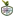 2:2  Jeonbuk Hyundai Motors Form: DLWL Form: DLLD |
-0.58 vs -0.48 | 2.58 | 0% | ⁃ | ⚽ 1.84 |
🏥 📉 Home team has considerable injuries and a dip in form recently | 📉 Away team has a dip in form recently |
| Tue. 09 Jul. | Deportivo Municipal  21:15 Universidad San Martín de Porres Form: WDDD Form: WDDW |
-0.5 vs -0.58 | 0% | ⚽⚽ 2.17 |
📉 Home team has a dip in form recently | 🏥 📉 Away team has considerable injuries and a dip in form recently | ||
| Sun. 07 Jul. | Fortaleza Esporte Clube  22:30 Fluminense Football Club Form: WDWW Form: LLLL |
-0.65 vs -0.8 | 1.8 | 0% | ⚽⚽ 2.53 |
🏥 Home team has considerable injuries | 🏥🏥 📉 Away team has MAJOR injuries and a dip in form recently |
Last updated 19:24:10 2024-07-07
Privacy Policy - 18+. Gamble Responsibly. - Terms